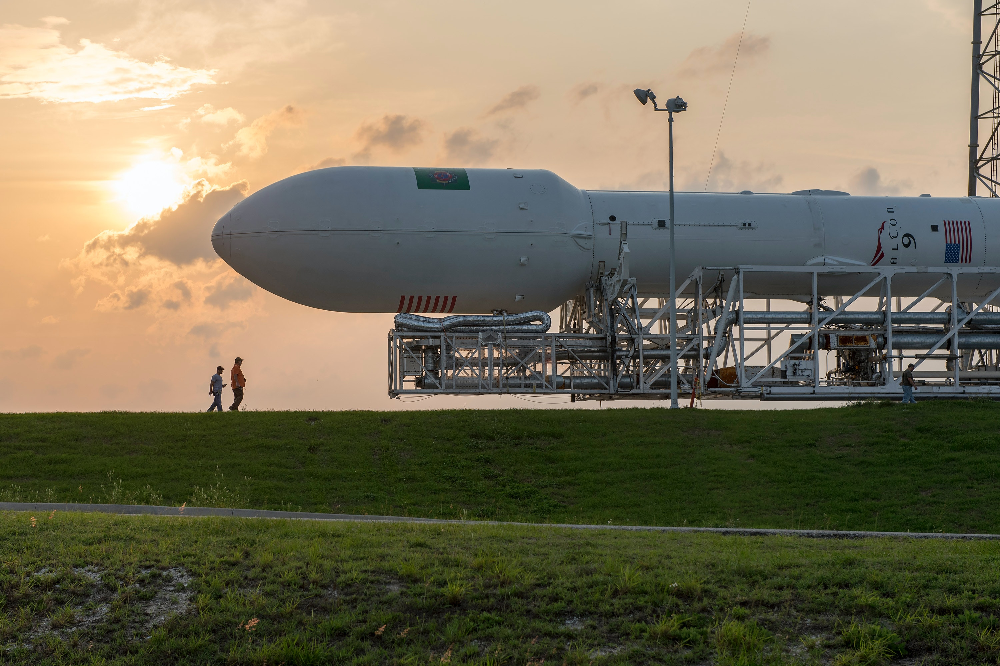
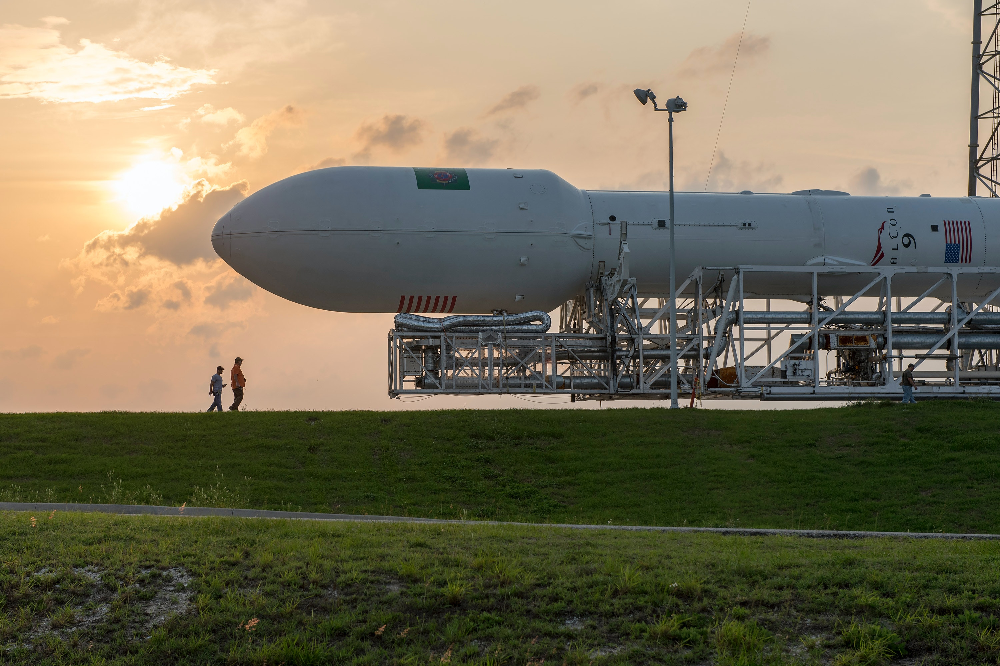
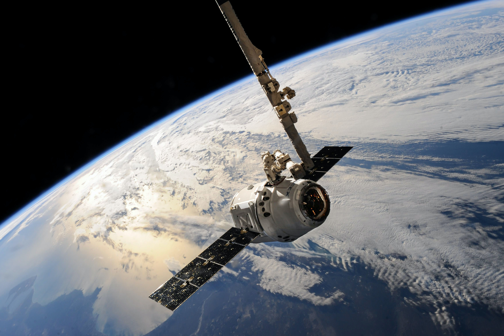
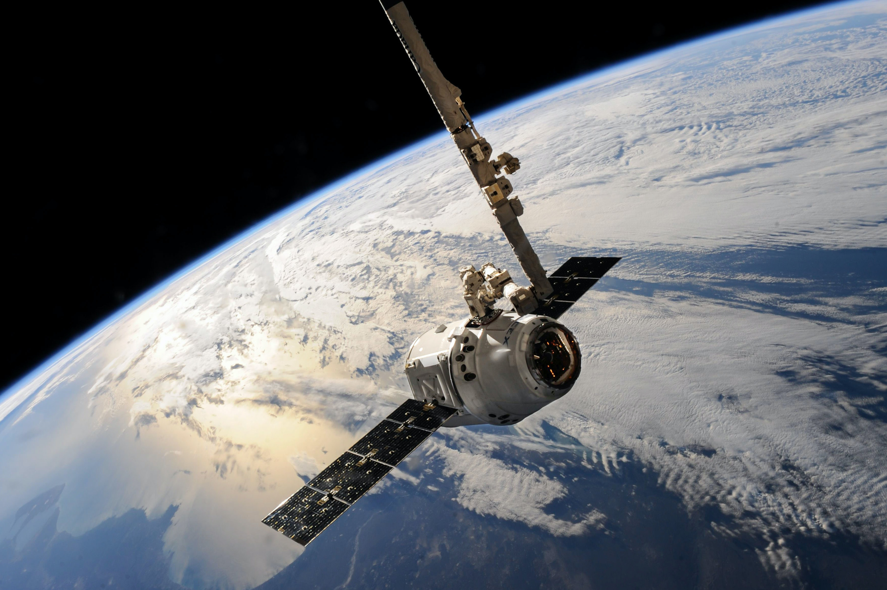

A SpaceX planeja lançar sua primeira missão de turismo espacial no quarto trimestre de 2021, a missão, chamada Inspiration4, será realizada com o foguete reutilizável Falcon 9 da SpaceX, que será lançado a partir do Centro Espacial Kennedy, na Flórida. A bordo estará Jared Isaacman, fundador e chefe da Shift4 Payments.
LINK


 



 
